开心果 Need Car · 2026-10-16T06:21:00+08:00 · 微信原文
在AURIX + TLF35584的系统设计中，很多工程师容易将MCU复位、ROT拉低以及WWD（Window Watchdog）重新初始化混为一谈。实际上，这几个概念分别属于不同层级的功能。理解ROT的方向、ROT被拉低的触发条件，以及TLF35584状态机与WWD的关系，对于调试启动异常、看门狗故障和Flash编程问题至关重要。
第一部分：ROT的方向及ROT被拉低的工况
（一）ROT的本质
ROT（Reset Output）是TLF35584输出给MCU的复位信号。
信号方向如下所示：
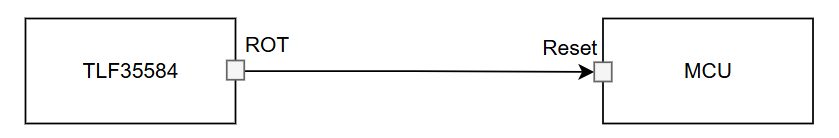
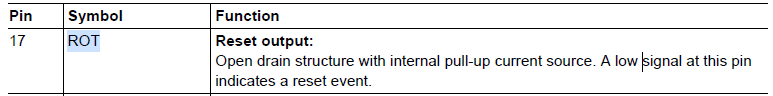
因此，ROT由TLF35584驱动，MCU接收ROT状态，MCU不能主动拉低ROT。这一点非常重要，因为很多调试场景会说：MCU把ROT拉低了，严格来说是不准确的。实际上应该理解为：MCU触发了某种故障条件，而TLF35584最终决定拉低ROT。
（二）哪些情况会导致ROT被拉低
1.Power-On Reset（POR）
系统上电时：
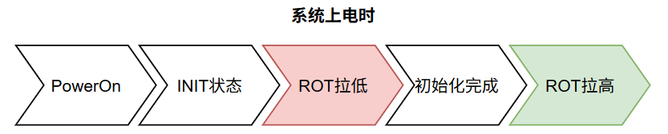
此时ROT拉低属于正常启动流程。
2. WWD超时
当窗口看门狗服务错误时：
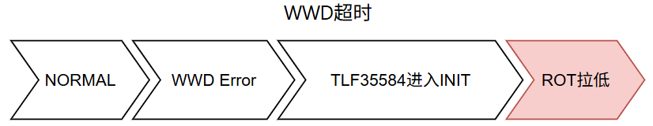
例如：未按时喂狗，在关闭窗口喂狗等都会导致WWD故障。
3. FWD故障
功能看门狗（Functional Watchdog）连续错误达到阈值后：
4. ERR监控故障
若MCU将ERRN拉为有效状态：
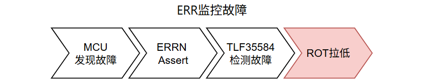
5. 严重安全故障
例如：电源异常，Fail Safe Monitor触发，某些短路检测等均可能使TLF35584执行系统复位并拉低ROT。
第二部分：WWD初始化场景及喂狗与ROT的关系
（一）WWD什么时候会重新初始化
很多工程师会简单认为：ROT拉低 = WWD重新初始化，实际上更准确的说法是：TLF35584状态回到INIT = WWD重新初始化。因为WWD属于TLF35584内部状态机的一部分。会导致WWD重新初始化的场景：
场景1：Power ON
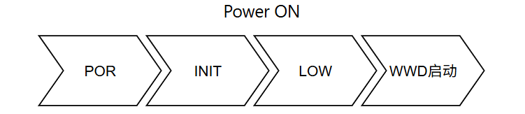
场景2：WWD自身错误
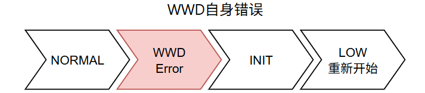
场景3：ERRN引发系统复位
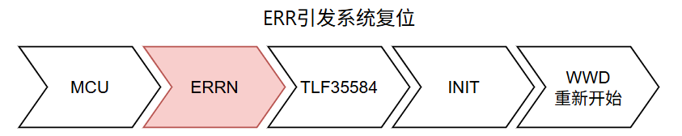
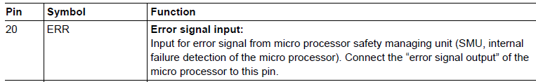
场景4：进入Fail Safe再恢复
（二）喂狗与ROT的关系
工程上经常把二者关联，但实际上：ROT ≠ Watchdog Signal。ROT仅表示：MCU是否处于复位状态。而喂狗用于：证明软件仍正常运行。二者关系如下：
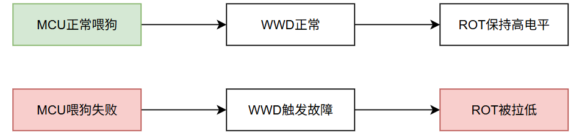
因此：喂狗错误 → 可能导致ROT拉低，ROT拉低 → 不一定是喂狗错误。因为还可能是：ERR故障，供电异常，POR，Fail Safe事件。
第三部分：MCU请求复位与ROT的关系
（一）MCU软件复位
最容易混淆的场景就是：CPU Reset、Application Reset、SMU Reset、Software Reset。例如：SCU_SWRSTCON触发的软件复位。此时：MCU复位，TLF35584不复位状态如下：
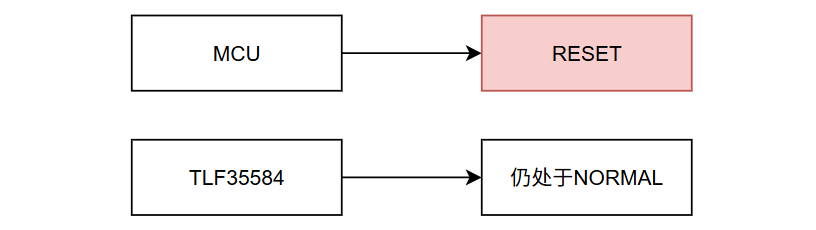
因此：ROT不会变化，WWD不会初始化，WWD仍继续计时。这里需要进一步延伸的是：MCU收到UDS（Unified Diagnostic Services）的0x10 服务（Diagnostic Session Control），特别10 02（Programming Session）以及0x11 服务（ECU Reset）时，ROT会拉低吗？这些诊断服务是软件触发的MCU级别的复位，所以，一般不会拉低ROT，复位TLF35584。所以，TLF35584中的WWD会继续运行。
（二）为什么软件复位后容易再次复位
假设WWD周期为100ms：
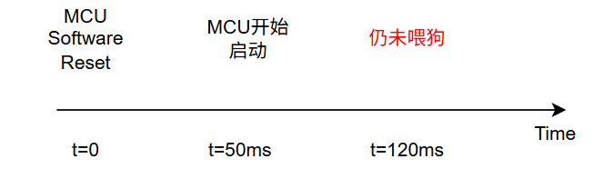
由于TLF35584中的WWD从未停止：WWD Timeout导致ROT拉低。此时工程师容易误认为：MCU复位导致WWD重新开始了。事实上恰恰相反：WWD根本没有重新开始，而是一直在运行。
（三）MCU通过ERR请求系统复位
另一种情况：
此时：NORMAL -> INIT -> LOW。因为TLF35584状态发生切换，所以：WWD重新初始化。启动后需要重新完成首次WWD服务。
对于AURIX与TLF35584系统，可以记住一个简单原则：判断WWD是否重新初始化，不要看MCU是否复位，而要看TLF35584是否回到INIT。
POR → INIT → WWD重新初始化；
ERR触发系统复位 → INIT → WWD重新初始化；
WWD故障 → INIT → WWD重新初始化；
FAILSAFE → INIT → WWD重新初始化；
MCU软件复位 → TLF35584保持NORMAL → WWD不重新初始化；
CPU Reset/Application Reset → TLF35584保持NORMAL → WWD不重新初始化。
因此在调试过程中，如果看到ROT被TLF35584主动拉低，基本可以认为系统已经重新进入INIT，WWD将从Long Open Window重新开始；而如果只是MCU自身复位，则应特别关注启动阶段是否能够及时恢复喂狗，因为此时WWD实际上一直在运行。
往期精彩回顾